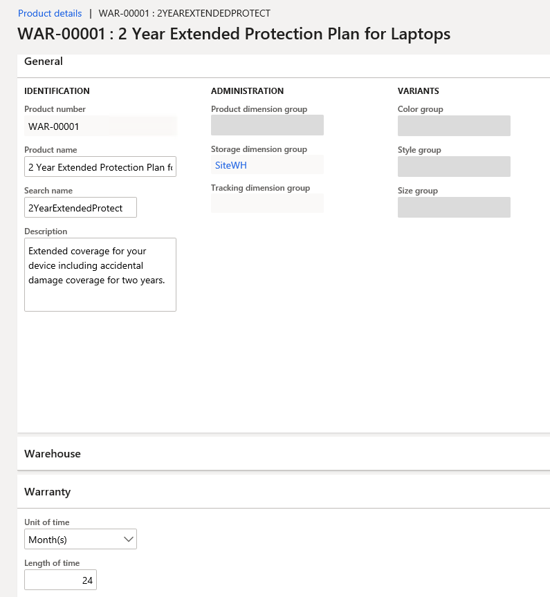
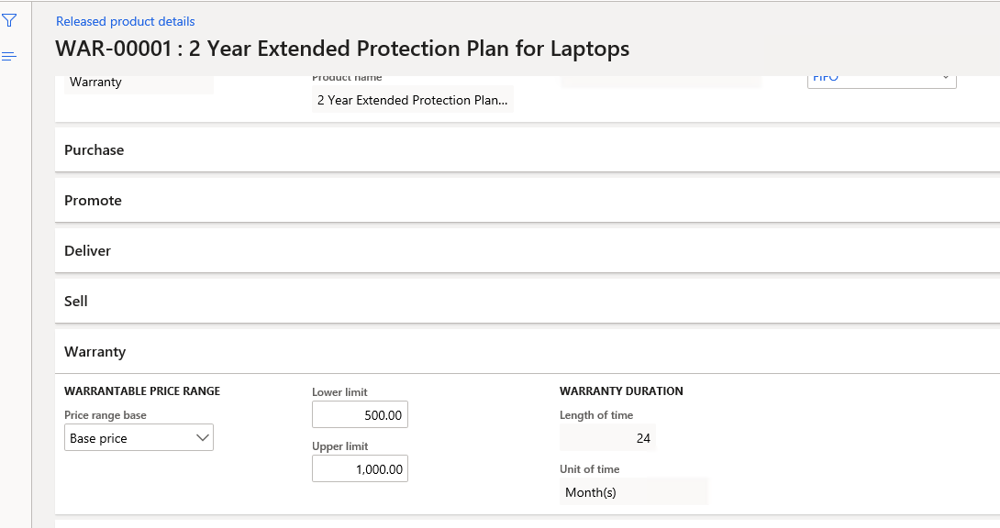
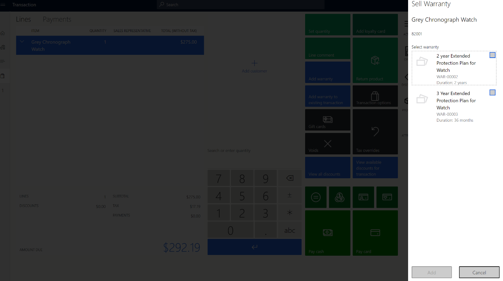
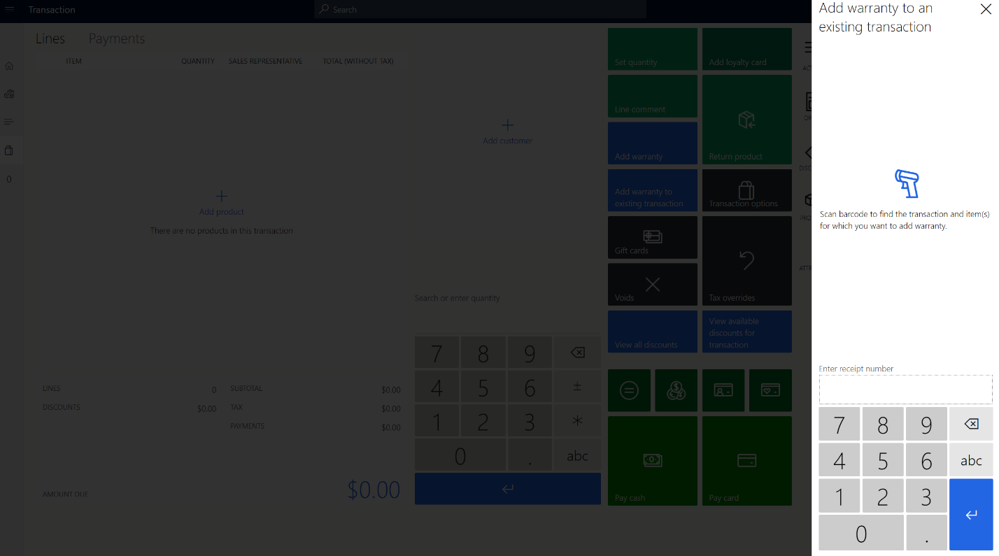

Erstellen und konfigurieren Sie erweiterte Garantien
Important
Dynamics 365 Retail ist jetzt Dynamics 365 Commerce und bietet umfassende Handelsfunktionen für alle Kanäle – von E-Commerce über Shops bis hin zu Callcentern. Weitere Informationen zu diesen Änderungen finden Sie unter Microsoft Dynamics 365 Commerce.
In diesem Thema werden erweiterte Garantien behandelt und deren Erstellung und Konfiguration in Microsoft Dynamics 365 Commerce beschrieben.
Übersicht
Kunden entscheiden sich zunehmend für erweiterten Support und Service, wenn sie Produkte kaufen, insbesondere Konsumgüter, die zu einem Premium-Preis verkauft werden, wie z. B. Telefone und Computer. Durch die Bereitstellung erweiterter Kaufgarantien können Einzelhändler zur Kundenbindung beitragen. Erweiterte Garantien informieren Kunden darüber, wo sie Service und Support erhalten können. Daher können sie darauf vertrauen, dass ihre Probleme effektiv behandelt werden.
Erweiterte Garantien können beim ersten Produktkauf an Kunden in einem Einzelhandelskanal verkauft werden. Sie können auch nach dem ersten Kauf für eine begrenzte Zeit verkauft werden.
Einrichtung des Garantieartikels
Dynamics 365 Commerce bietet Funktionen, mit denen Sie ein Garantieelement erstellen und Attribute dafür festlegen können. Diese Attribute umfassen die Zuordnung zwischen einem Produkt und einem Garantieartikel, den Preis der Garantie und die Dauer der Garantie. Nachdem ein Garantieartikel konfiguriert und an die Organisationseinheit freigegeben wurde, kann ein Einzelhändler Garantien über MPOS (Modern Point of Sale), Online-Shops und andere Einzelhandelskanäle verkaufen.
Einrichtung des Garantieartikelverkaufs
Erweiterte Garantien können beim ersten Produktkauf an Kunden in einem Einzelhandelskanal verkauft werden. Sie können auch nach dem ersten Kauf für eine begrenzte Zeit verkauft werden.
An der Verkaufsstelle (POS) werden Vertriebsmitarbeiter aufgefordert, eine erweiterte Garantie hinzuzufügen, wenn ein verwandtes Produkt in den Warenkorb eines Kunden gelegt wird. Daher wird Vertriebsmitarbeitern im Rahmen der Verkaufschance eine Upsell- oder Cross-Selling-Gelegenheit angeboten.
Kunden können auch später zurückkehren und eine erweiterte Garantie für ein zuvor erworbenes Produkt erwerben. In diesen Fällen kann ein Vertriebsmitarbeiter die ursprüngliche Transaktion nachschlagen und dem Kunden den entsprechenden Artikel mit erweiterter Garantie verkaufen.
Garantieterminologie
In der folgenden Tabelle sind einige Garantiebedingungen definiert.
| Zeitdauer | Beschreibung |
|---|---|
| Erweiterte Garantie/Garantie | Eine erweiterte Garantie bezieht sich auf einen Servicevertrag oder Vertrag, der Kunden eine verlängerte Garantie bietet. Die erweiterte Garantie umfasst den zusätzlichen Service des Austauschs oder Reparierens von Waren während der Garantiezeit. |
| Herstellergarantie | Eine Herstellergarantie (oft als bezeichnet als eingeschränkte Garantie) ist die Garantie, die Kunden beim Kauf eines Produkts erhalten. Hier sind einige Merkmale einer Herstellergarantie:
|
| Garantieartikel | Ein Garantieartikel ist ein Artikel mit erweiterter Garantie, der für einen Artikel mit Garantie verkauft wird. Ein Beispiel ist ein zweijähriger Unfallschutzplan für Laptops. |
| Garantierter Artikel | Ein garantierter Artikel ist ein serialisiertes Produkt, für das eine Garantie verkauft wird. Zum Beispiel ist ein Laptop ein garantierter Artikel, für den zwei Jahre und drei Jahre erweiterte Garantie verkauft werden. |
| Garantiegruppe | Eine Garantiegruppe ist eine Beziehung zwischen Garantieartikeln und garantierten Artikeln. Der POS verwendet Garantiegruppen, um zu bestimmen, welche Garantieartikel Vertriebsmitarbeiter zum Hinzufügen aufgefordert werden sollten, wenn ein garantierter Artikel zum Warenkorb eines Kunden hinzugefügt wird. |
| Garantierichtlinie | Eine Garantiebestimmung ist eine Entität, die in Commerce erstellt wird, wenn eine Garantierichtlinie verkauft wird. Eine Garantierichtlinie enthält Informationen wie das Start- und Enddatum des gekauften Garantieartikels, die allgemeinen Geschäftsbedingungen und die Seriennummer des garantierten Produkts. Garantierichtlinien können an Kunden weitergegeben werden, sodass diese eine Referenz für den von ihnen gekauften erweiterten Garantiegegenstand haben. |
Anlegen eines Garantieartikels
Führen Sie die folgenden Schritte aus, um ein Garantieelement in Commerce zu erstellen.
Navigieren Sie zu Einzelhandel und Handel > Produkte und Kategorien > Produkte.
Wählen Sie Neu aus, um einen neuen Garantieartikel zu erstellen.
In dem Dialogfeld Neues Produkt im Feld Produktart wählen Sie Dienstleistung.
Wählen Sie im Feld Produktuntertyp den Eintrag Produktmaster.
Wählen Sie im Feld Produktservicetyp den Eintrag Dienstleistung aus.
Geben Sie in das Feld Produktname den Produktnamen ein.
In dem Feld Einzelhandelskategorie wählen Sie im Dropdown-Dialogfeld einen Wert aus und wählen Sie dann OK.
Geben Sie im Feld Produktnummer die Nummer des neuen Produkts ein.
Wählen Sie OK.
Auf der Seite Produktdetails im Inforegister Garantie legen Sie die Felder Zeiteinheit und Länge der Zeit ein.
Feldname Wert Beschreibung Zeiteinheit Tage, Wochen, Monate, oder Jahre Dieses Feld gibt die Zeiteinheit an, die für die Garantie verwendet wird. Zeitdauer Ein positiver ganzzahliger Wert Dieses Feld gibt die Dauer der Garantie in der ausgewählten Zeiteinheit an. Stellen Sie beispielsweise für eine zweijährige Garantie das Feld Zeiteinheit auf Jahre und das Feld Länge der Zeit auf 2. Alternativ können Sie das Feld Zeiteinheit auf Monate und das Feld Länge der Zeit auf 24 festlegen, wie in der folgenden Abbildung gezeigt.

Wählen Sie Speichern, um den Garantieartikel zu speichern.
Geben Sie das Garantieprodukt an das Unternehmen weiter, damit es verkauft werden kann. Weitere Informationen zum Einrichten von Einzelhandelsprodukten finden Sie unter Einrichten von Einzelhandelsprodukten.
Auf der Seite Freigegebene Produktdetails im Inforgister Garantie stellen Sie die Felder Preisspannenbasis, Untere Grenze, und Höchstgrenze fest.
Feldname Wert Beschreibung Preisspannenbasis Keiner, Grundpreis, oder Verkaufspreis - Keiner – Die Werte Untere Grenze und Höchstgrenze von Preisklassen gelten nicht.
- Grundpreis – Eine gegebene Garantie gilt, wenn der Grundpreis (d.h der Preis ohne Rabatte) des garantierten Artikels zwischen den Werten Untere Grenze und Höchstgrenze, die hier angegeben sind, basierend auf dem Preis des garantierten Artikels liegen.
- Verkaufspreis – Dieser Wert ist für die zukünftige Verwendung reserviert.
Untergrenze, Obergrenze Ein positiver ganzzahliger Wert Diese Felder definieren die oberen und unteren Preisgrenzen des garantierten Artikels und wie der aktuelle Garantieartikel auf den garantierten Artikel anwendbar ist. Diese Grenzwerte können auf dem Grundpreis des garantierten Artikels basieren (auch als vom Hersteller empfohlener Verkaufspreis bezeichnet [UVP]). Wenn das Feld Preisspanne Basis auf Grundpreis festgelegt ist, wird nur ein Garantieartikel (Produkt), dessen Grundpreis zwischen den Werten Untere Grenze und Höchstgrenze liegt, eine Aufforderung auslösen, das Garantieelement dem POS hinzuzufügen. Die folgende Abbildung zeigt beispielsweise die Preisspanne Basis, das Feld ist auf den Grundpreis festgelegt, das Feld Untere Grenze ist auf $500 gesetzt, und das Feld Höchstgrenze auf $1000.

Sortieren Sie den Garantieartikel auf den Kanal, auf dem er verkauft wird. Weitere Informationen finden Sie unter Einrichten von Sortimenten.
Beispiel
Ein Artikel (Produkt) mit Garantie für einen Laptop hat einen Grundpreis $999, und es gibt zwei Artikel mit Garantie für einen Laptop:
- Garantie_1 hat eine Untergrenze von $500 und eine Obergrenze von $1,000 und das Feld Preisspanne Basis ist auf Grundpreis festgesetzt.
- Garantie_2 hat eine Untergrenze von $1,001 und eine Obergrenze von $2,000 und das Feld Preisspanne Basis ist auf Grundpreis festgesetzt.
In diesem Fall werden Sie aufgefordert, die Garantie hinzuzufügen, wenn der Artikel mit der Garantie für den Laptop in den Warenkorb eines Kunden gelegt wird_1 wird am POS angezeigt, da der Preis des Laptops zwischen der unteren und oberen Garantiegrenze liegt_1.
Note
In diesem Beispiel, wenn Sie möchten, dass Eingabeaufforderungen für beide Garantien angezeigt werden_1 und Garantie_2, unabhängig vom Preis des garantierten Artikels, stellen Sie das Preisspanne Basis Feld auf Keiner.
Konfigurieren Sie kanalspezifische Einstellungen
Mit kanalspezifischen Einstellungen können Sie festlegen, ob am POS eine Aufforderung zum Hinzufügen eines Garantieartikels angezeigt werden soll, wenn ein Warenkorbartikel in den Warenkorb eines Kunden gelegt wird.
Führen Sie die folgenden Schritte aus, um Kanal spezifische Einstellungen in Commerce zu aktivieren.
Gehen Sie zu Retail and Commerce > Produkte und Kategorien > Garantien > Garanieeinstellungen.
Auf der Registerkarte Kanalspezifisch in der Aufforderung zur Gewährleistung führen Sie einen der folgenden Schritte aus, um die Spalte für Ihren Kanal anzuzeigen:
- Aktivieren Sie das Kontrollkästchen, wenn am POS eine Eingabeaufforderung für den Garantieartikel angezeigt werden soll, wenn der Garantieartikel in den Warenkorb gelegt wird.
- Deaktivieren Sie das Kontrollkästchen, wenn am POS keine Eingabeaufforderung für den Garantieartikel angezeigt werden soll, wenn der Garantieartikel in den Warenkorb gelegt wird.
Führen Sie den Einzelvorgang 1070 zum Synchronisieren der Daten mit dem Kanal aus.
Konfigurieren Sie eine Nummernfolge für Garantierichtlinien
Jede Garantierichtlinie wird durch eine Garantierichtliniennummer eindeutig identifiziert, die durch eine Nummernfolge generiert wird. Weitere Informationen zu Nummernsquenzen finden Sie unter Überblick über Nummernsequenzen.
Führen Sie die folgenden Schritte aus, um eine Nummernfolge für Garantierichtlinien in Commerce zu konfigurieren.
- Gehen Sie zu Retail and Commerce > Produkte und Kategorien > Garantien > Garanieeinstellungen.
- Auf der Zahlenfolgen Registerkarte in der Zeile für die Garantiebestimmungen Referenz geben Sie einen Wert ein oder wählen Sie ihn aus dem Feld Nummernfolgecode aus.
Eine Garantiegruppe einrichten
Eine Garantiegruppe ist eine Beziehung zwischen Garantieartikeln und garantierten Artikeln. Der POS verwendet Garantiegruppen, um zu bestimmen, welche Garantieartikel Vertriebsmitarbeiter zum Hinzufügen aufgefordert werden sollten, wenn ein garantierter Artikel zum Warenkorb eines Kunden hinzugefügt wird.
Gehen Sie zum Einrichten einer Garantiegruppe in Commerce folgendermaßen vor:
- Gehen Sie zu Retail and Commerce > Produkte und Kategorien > Garantien > Garaniegruppen.
- Wählen Sie Neu aus, um einen neuen Garantiegruppe zu erstellen.
- Geben Sie im Feld Name einen Namen für die neue Gruppe ein.
- Geben Sie auf dem Inforegister im Feld Allgemein eine Beschreibung der Gruppe ein.
- Auf dem Inforegister Garantieprodukte wählen Sie Zeile hinzufügen, um einen Garantieartikel hinzuzufügen.
- In dem Feld Bestellung anzeigen geben Sie eine Nummer ein, um die Garantiegruppe am POS zu bewerten. Der POS zeigt Garantieartikel in aufsteigender Reihenfolge in der Garantieaufforderung an.
- Auf dem Inforegister Garantieprodukte wählen Sie Zeile hinzufügen, um ein Garantieprodukt hinzuzufügen.
- Wenn der Garantiegegenstand für eine ganze Kategorie von Garantiegegenständen (Produkten) gilt, wählen Sie die Kategorie im Feld Kategorie aus. Wenn der Garantiegegenstand auf einen bestimmten Garantiegegenstand (Produkt) anwendbar ist, wählen Sie das Produkt im Feld Produkt aus.
- Auf dem Inforegister Anwendbare Kanäle wählen Sie Zeile hinzufügen, um den Kanal hinzuzufügen, in dem Sie den Garantieartikel verkaufen möchten.
- Wählen Sie Speichern, um die Konfiguration zu speichern.
- Wählen Sie Veröffentlichen, um die Garantiegruppe zu veröffentlichen.
- Führen Sie den Einzelvorgang 1040 zum Synchronisieren von Daten mit dem Kanal aus.
Verkaufen Sie Garantieartikel am POS
Mit zwei POS-Vorgängen können Vertriebsmitarbeiter während des Workflows Garantieartikel für Kundenkäufe verkaufen:
- Garantie hinzufügen – Dieser Vorgang löst eine Eingabeaufforderung aus, in der die geltenden Garantien für einen im Warenkorb ausgewählten garantierten Artikel angezeigt werden.
- Fügen Sie der bestehenden Transaktion eine Garantie hinzu – Mit dieser Operation können Vertriebsmitarbeiter Garantien für garantierte Artikel verkaufen, die zuvor verkauft wurden. Vertriebsmitarbeiter können die ursprüngliche Transaktion für einen garantierten Artikel finden, indem sie die Belegnummer der Transaktion eingeben.
Die folgende Abbildung zeigt ein Beispiel einer POS-Terminalseite mit der Aufforderung, einen Garantieartikel für den aktuellen Kauf eines Garantieartikels hinzuzufügen.

Die folgende Abbildung zeigt ein Beispiel für die Funktion zum Hinzufügen eines Garantieartikels für einen zuvor verkauften Garantieartikel.

Garantiebuchungen verarbeiten
Wenn Garantien in Cash-and-Carry-Transaktionen verkauft werden, können Commerce-Benutzer die Transaktionen ausführen, nachdem die Transaktionen in der Commerce-Zentrale als Einzelauftrag Garantietransaktionen verarbeiten ausgeführt wurden, um die Garantietransaktionen zu verarbeiten und Garantierichtlinien zu erstellen.
Um Garantietransaktionen in Commerce Headquarters zu verarbeiten, folgen Sie diesen Schritten.
Gehen Sie zu Retail and Commerce > Produkte und Kategorien > Garantien > Garantietransaktionen verarbeiten.
In dem Wählen Sie Organisationsknoten Dialogfeld im Feld Organisationshierarchie wählen Sie einen Wert.
In der Liste Verfügbare Organisationsknoten wählen Sie entweder ein einzelnes Geschäft oder, wenn Sie den Stapeljob für eine Gruppe von Geschäften erstellen möchten, einen Knoten aus.
Wählen Sie die Schaltfläche mit dem Pfeil nach Rechts, um das Feld in die Liste Ausgewählte Felder zu verschieben und wählen Sie Ausgewählten Organisationsknoten.
Wählen Sie Im Hintergrund ausführen.
Stellen Sie die Option Stapelverarbeitung auf Ja und wählen dann Wiederholung.
In dem Wiederholung definieren Dialogfeld im Feld Anfangsdatum wählen Sie in diesem Feld ein Startdatum für die Wiederholung aus oder geben Sie es ein.
In dem Feld Startzeit wählen Sie im Feld eine Startzeit für die Wiederholung aus oder geben Sie sie ein.
Führen Sie einen dieser Schritte aus:
- Wählen Sie die Option Kein Enddatum, wenn die Wiederholung niemals enden sollte.
- Wählen Sie die Option Ende danach, wenn die Wiederholung nach einer bestimmten Anzahl von Läufen enden soll. Wenn Sie diese Option wählen, geben Sie nach der Auswahl dieser Option die Anzahl von Perioden ein.
- Wählen Sie die Option Enddatum, wenn die Wiederholung an einem bestimmten Datum enden soll. Wenn Sie diese Option wählen, geben Sie nach der Auswahl dieser Option das Datum ein.
Wählen Sie OK.
Wählen Sie OK.
Garantiebestimmungen
Wenn eine erweiterte Garantie verkauft wird, wird automatisch eine Garantierichtlinie erstellt. Garantierichtlinien können an Kunden weitergegeben werden, damit diese eine Referenz für den von ihnen gekauften erweiterten Garantiegegenstand haben. Zu den Eigenschaften der Garantierichtlinien gehören das effektive Start- und Ablaufdatum der Garantie, die allgemeinen Geschäftsbedingungen sowie die Seriennummer des Garantiegegenstandes, für den die Garantie verkauft wurde.
Note
Garantierichtlinieneigenschaften werden automatisch generiert, wenn Garantierichtlinienentitäten erstellt werden. Derzeit können sie nicht manuell konfiguriert oder bearbeitet werden.
In der folgenden Tabelle werden die Eigenschaften der Garantierichtlinien und ihre Werte beschrieben. In der Commerce-Zentrale heißt die Datenbanktabelle WARRANTYPOLICY.
| Eigenschaftenname | Wert | Beschreibung |
|---|---|---|
| Versicherungsnummer | Eine Zeichenkette (maximal 20 Zeichen) | Die Garantiebedingungen |
| WarrantiedItemId | Eine Zeichenkette (maximal 20 Zeichen) | Die Kennung des Garantieelements |
| WarrantiedInventoryLotId | Eine Zeichenkette (maximal 20 Zeichen) | Die Bestandlos-Kennung des Garantieelements |
| WarrantiedSerialNumber | Eine Zeichenkette (maximal 20 Zeichen) | Die Seriennummer des Garantieartikels |
| WarrantiedFulfilledDate | Ein Datum | Das Erfüllungsdatum des Garantieelements |
| WarrantyItemId | Eine Zeichenkette (maximal 20 Zeichen) | Die Kennung des Garantieartikels |
| WarrantyInventoryLotId | Eine Zeichenkette (maximal 20 Zeichen) | Die Bestandlos-Kennung des Garantieartikels |
| WarrantySalesDate | Ein Datum | Das Verkaufsdatum des Garantieartikels |
| WarrantyEffectiveDate | Ein Datum | Das effektive Datum der Garantierichtlinie |
| Garantieablaufdatum | Ein Datum | Das Ablaufdatum der Garantierichtlinie |
| CustAccount | Eine Zeichenkette (maximal 20 Zeichen) | Die Nummer des Debitorenkontos. |
| Status | Erstellt, Nichtig, Wirksam, oder Abgelaufen | Der Status der Garantierichtlinie |
| Notizen | Eine Zeichenkette (ein Maxium von 255 Zeichen) | Hinweise zur Garantiepolitik, wie z. B. Geschäftsbedingungen |
Häufig gestellte Fragen (FAQ)
Warum wird am POS keine Garantieaufforderung angezeigt?
Stellen Sie sicher, dass der Garantieartikel dem Kanal zugeordnet ist. Stellen Sie außerdem sicher, dass die Garantiegruppe so konfiguriert ist, dass sie den entsprechenden Kanal enthält.
Wenn ich versuche, einer vorhandenen Transaktion eine Garantie hinzuzufügen und die Bestellnummer des Kundenauftrags einzugeben, werden dann keine Transaktionsposten angezeigt?
Belege können nur gefunden werden, wenn ein Pull-Job (P-Job) ausgeführt wird, um die Belege in die Commerce-Zentrale hochzuladen. Um den P-Job auszuführen, gehen Sie zu Retail and Commerce > Retail and Commerce IT > Verteilungsplan, wählen Sie den Einzelauftrag P-0001 und wählen Sie dann Jetzt ausführen.
Warum gilt die Garantiefunktion nur für serialisierte Produkte?
Eine Garantie ist eine Dienstleistung, die für ein bestimmtes, einzigartiges Produkt erbracht wird. In Dynamics 365 kann ein Produkt nur durch eine Seriennummer eindeutig identifiziert werden.